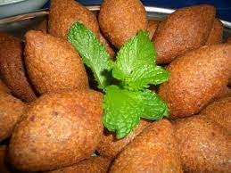

Kibbeh Recipe

a delicious Middle Eastern dish consisting of beef, wheat & onions.
Description
Kibbehs are great as an appetizer or the main dish. They're crisp on the outside and soft on the inside and have an almost meatball-like appearance.
Ingredients
2 medium onions, 1 finely chopped, 1 coarsely chopped
2 pounds lean ground beef
Steps
- In a medium bowl, place the bulgur wheat and add the cold water. Let it soak for 30 minutes.
- excess water by placing the bulgur in a cheesecloth or clean kitchen towel and thoroughly squeezing. Reserve.
- In a medium bowl, mix the coarsely chopped onion with 1 pound of the meat, the soaked bulgur, 1 teaspoon of the salt, and 1 teaspoon of the pepper. Stir well to combine.